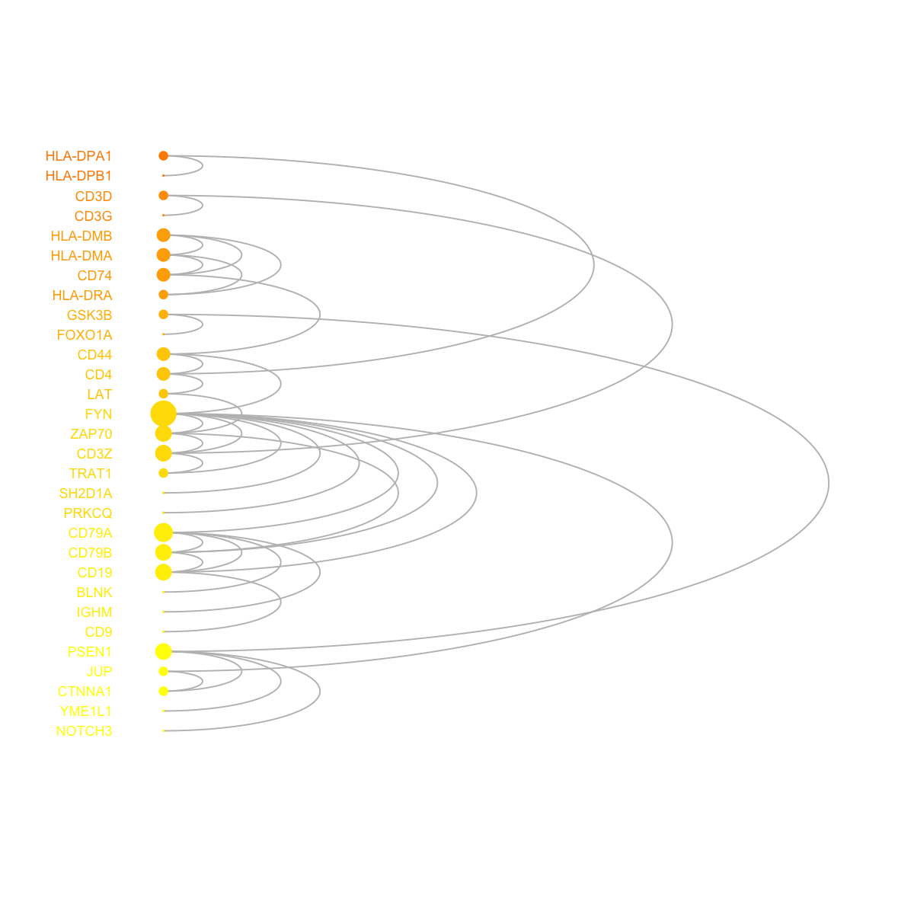
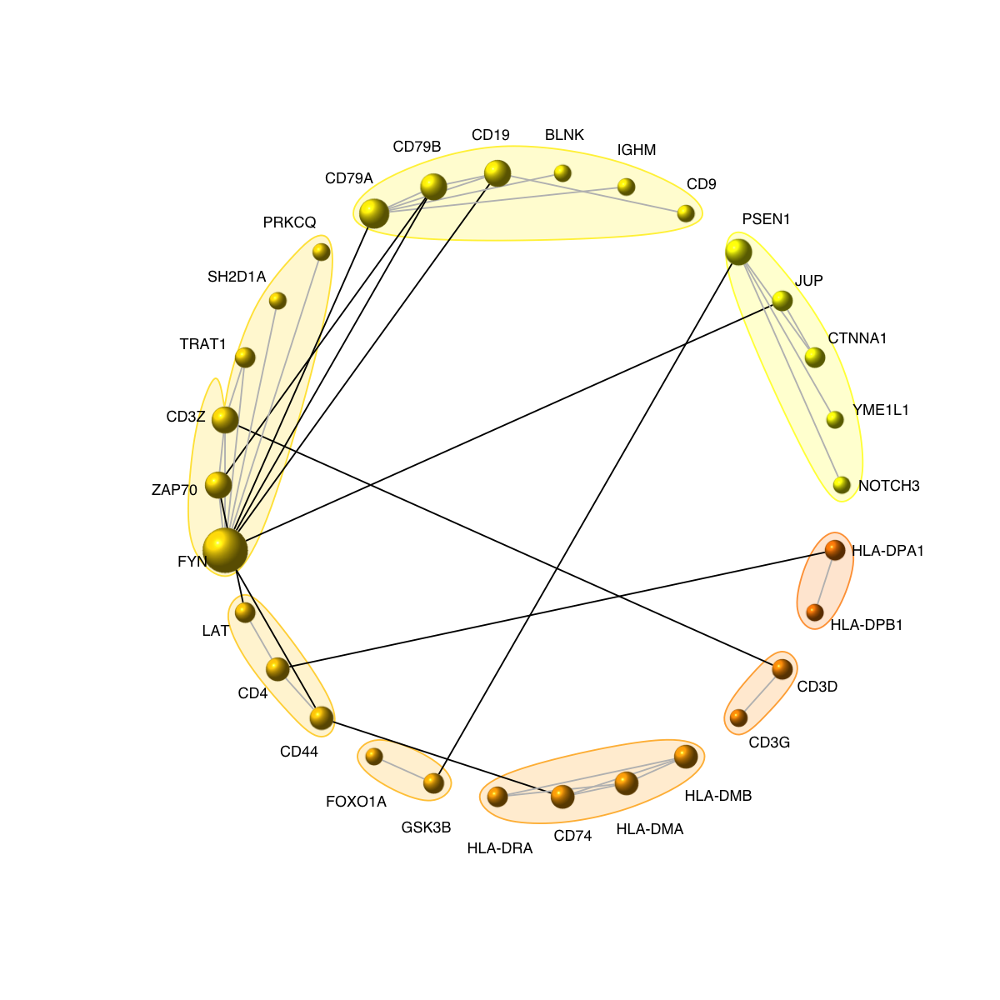
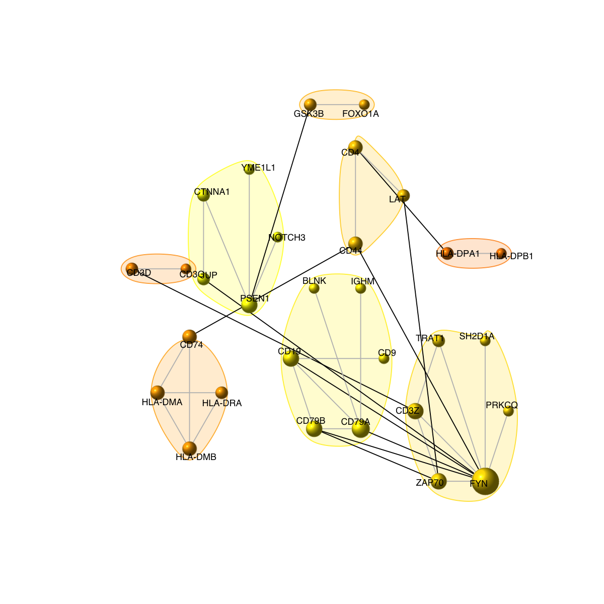
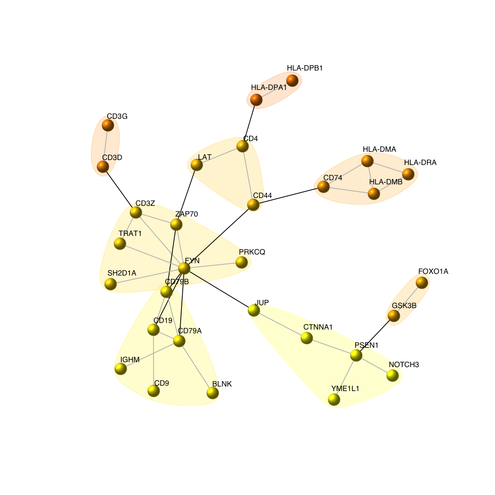
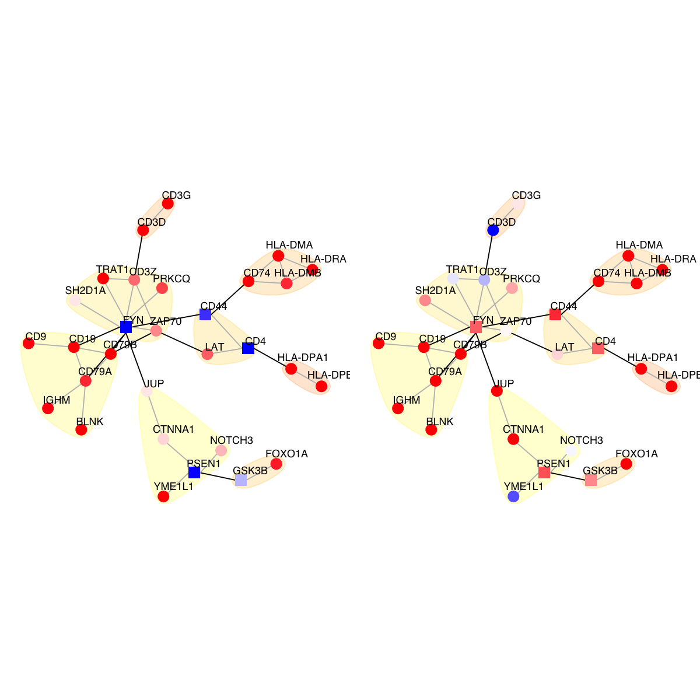
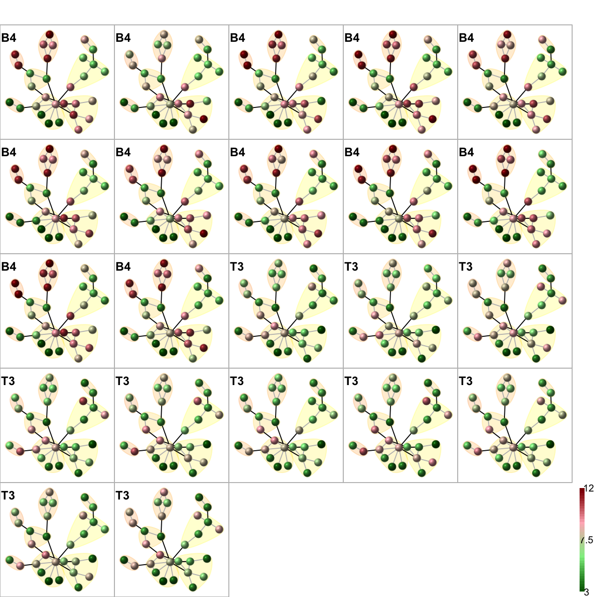
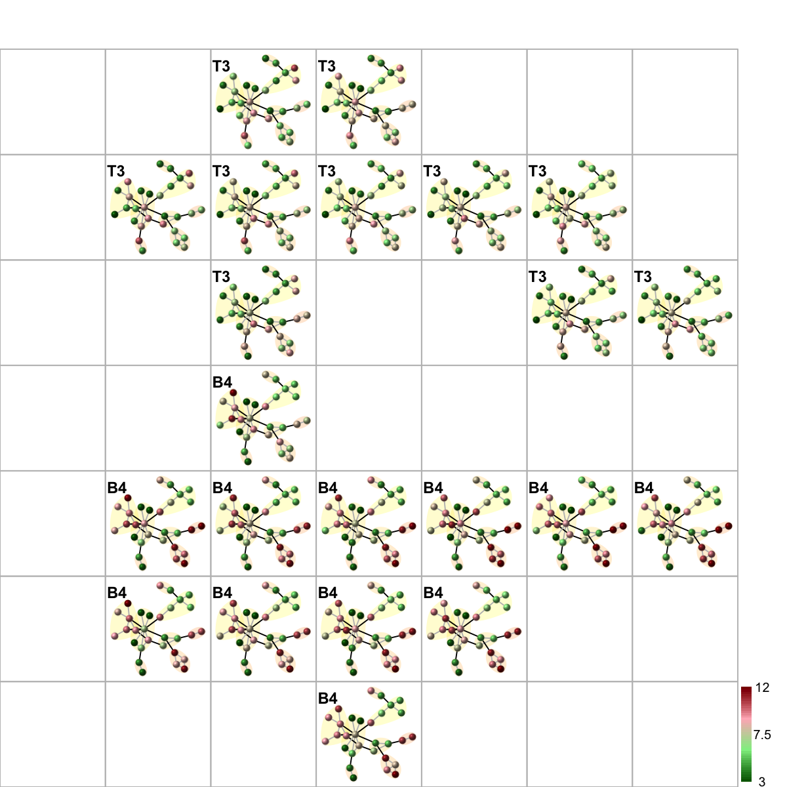
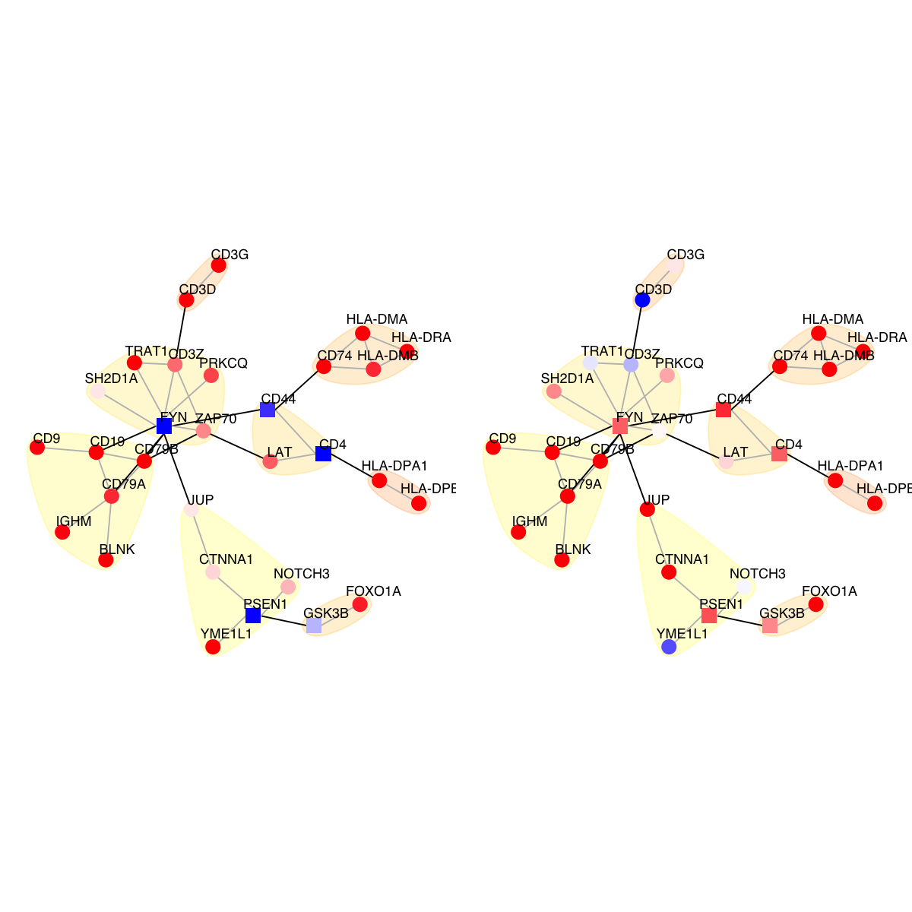
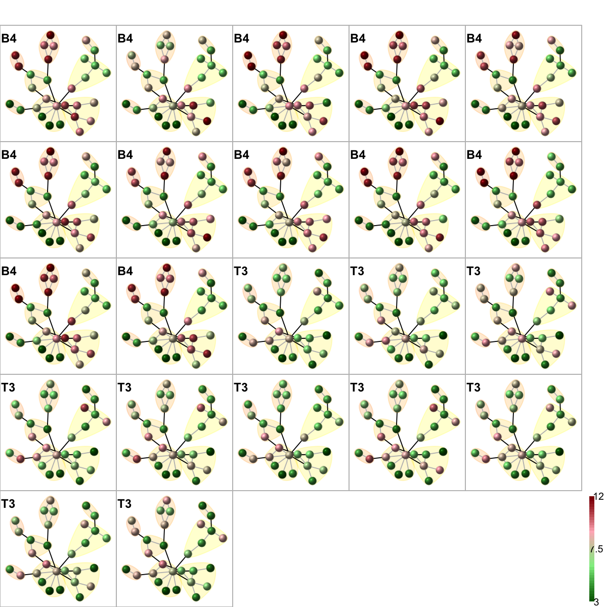
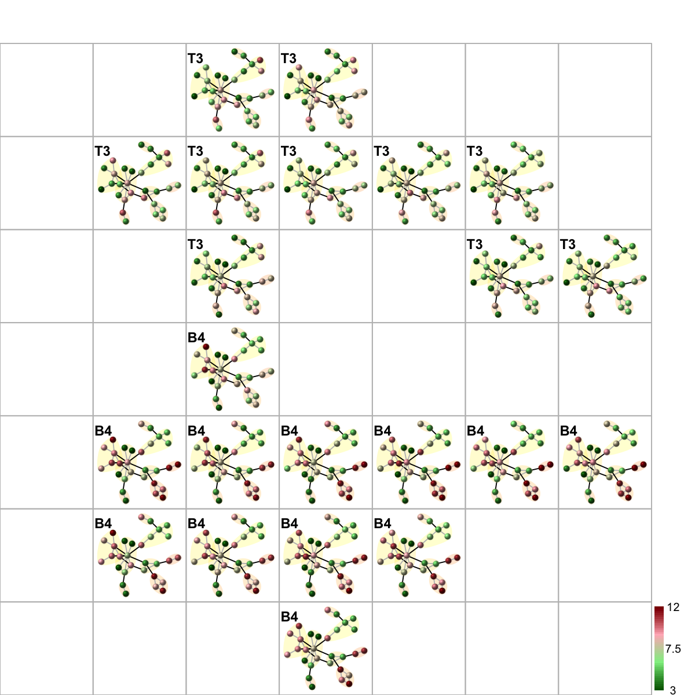

Demo for ALL dataset
Notes:
# This is a demo for human embryo dataset from Fang et al
#
# This human embryo expression dataset (available from http://www.ncbi.nlm.nih.gov/pubmed/20643359) involves six successive developmental stages (S9-S14) with three replicates (R1-R3) for each stage, including:
## Fang: an expression matrix of 5,441 genes X 18 samples;
## Fang.geneinfo: a matrix of 5,441 X 3 containing gene information;
## Fang.sampleinfo: a matrix of 18 X 3 containing sample information.
###############################################################################
library(BioNet)
Loading required package: Biobase
Loading required package: BiocGenerics
Loading required package: parallel
Attaching package: ‘BiocGenerics’
The following objects are masked from ‘package:parallel’:
clusterApply, clusterApplyLB, clusterCall, clusterEvalQ,
clusterExport, clusterMap, parApply, parCapply, parLapply,
parLapplyLB, parRapply, parSapply, parSapplyLB
The following object is masked from ‘package:stats’:
xtabs
The following objects are masked from ‘package:base’:
anyDuplicated, append, as.data.frame, as.vector, cbind, colnames,
duplicated, eval, evalq, Filter, Find, get, intersect, is.unsorted,
lapply, Map, mapply, match, mget, order, paste, pmax, pmax.int,
pmin, pmin.int, Position, rank, rbind, Reduce, rep.int, rownames,
sapply, setdiff, sort, table, tapply, union, unique, unlist
Welcome to Bioconductor
Vignettes contain introductory material; view with
'browseVignettes()'. To cite Bioconductor, see
'citation("Biobase")', and for packages 'citation("pkgname")'.
Loading required package: graph
Attaching package: ‘graph’
The following objects are masked from ‘package:igraph’:
degree, edges
Loading required package: RBGL
Attaching package: ‘RBGL’
The following object is masked from ‘package:igraph’:
transitivity
library(ALL)
data(ALL)
library(DLBCL)
data(interactome)
# Since several probesets represent one gene, we have to select one or concatenate them into one gene. One possibility is to use the probeset with the highest variance for each gene. It also maps the Affymetrix IDs to the identifiers of the network using the chip annotations and network geneIDs, which are unique, and returns the network names in the expression matrix. This reduces the expression matrix to the genes which are present in the network.
mapped.eset <- mapByVar(ALL, network=interactome, attr="geneID")
Loading required package: hgu95av2.db
Loading required package: AnnotationDbi
Loading required package: org.Hs.eg.db
Loading required package: DBI
mapped.eset[1:5,1:5]
01005 01010 03002 04006 04007
MAPK3(5595) 7.597323 7.479445 7.567593 7.384684 7.905312
TIE1(7075) 5.046194 4.932537 4.799294 4.922627 4.844565
CYP2C19(1557) 3.900466 4.208155 3.886169 4.206798 3.416923
BLR1(643) 5.903856 6.169024 5.860459 6.116890 5.687997
DUSP1(1843) 8.570990 10.428299 9.616713 9.937155 9.983809
# extract network that only contains genes in mapped.eset
network <- dNetInduce(g=interactome, nodes_query=rownames(mapped.eset), knn=0, remove.loops=T, largest.comp=T)
g <- igraph.from.graphNEL(network)
# 1) preparation of node p-values
library(limma)
Attaching package: ‘limma’
The following object is masked from ‘package:BiocGenerics’:
plotMA
design <- model.matrix(~ -1 + factor(c(substr(unlist(ALL$BT), 0, 1))))
colnames(design)<- c("B", "T")
contrast.matrix <- makeContrasts(B-T, levels=design)
contrast.matrix
Contrasts
Levels B - T
B 1
T -1
fit <- lmFit(mapped.eset, design)
fit2 <- contrasts.fit(fit, contrast.matrix)
fit2 <- eBayes(fit2)
# get the corresponding p-values and and calculate the scores thereupon.
pval <- fit2$p.value[,1]
# 2) identification of module
fdr_target <- 1e-14
module <- dNetPipeline(g=g, pval=pval, fdr=fdr_target)
Start at 2014-03-01 20:37:02
First, fit the p-value distribution under beta-uniform mixture model...
A total of p-values: 6190
Maximum Log-Likelihood: 12068.4
Mixture parameter (lambda): 0.453
Shape parameter (a): 0.144
Second, determine FDR threshold...
FDR threshold: 1.00e-14
Third, calculate the scores according to the fitted BUM and FDR threshold...
Finally, find the module with the maximum score...
Size of the module: 30 nodes and 38 edges
Finish at 2014-03-01 20:37:04
Runtime in total is: 2 secs
g <- module
glayout <- layout.fruchterman.reingold(g)
# 3) color nodes according to communities identified via a spin-glass model and simulated annealing
#com <- spinglass.community(g, spins=3)
com <- walktrap.community(g, modularity=T)
com$csize <- sapply(1:length(com),function(x) sum(com$membership==x))
vgroups <- com$membership
colormap <- "yellow-darkorange"
palette.name <- visColormap(colormap=colormap)
mcolors <- palette.name(length(com))
vcolors <- mcolors[vgroups]
com$significance <- sapply(1:length(com), function(x) {
community.significance.test <- function(g, vids, ...) {
subg <- induced.subgraph(g, vids)
within.degrees <- igraph::degree(subg)
cross.degrees <- igraph::degree(g, vids) - within.degrees
wilcox.test(within.degrees, cross.degrees, ...)
}
tmp <- suppressWarnings(community.significance.test(g, vids=V(g)$name[com$membership==x]))
signif(tmp$p.value, digits=3)
})
# 4) size nodes according to degrees
vdegrees <- igraph::degree(g)
# 5) sort nodes: first by communities and then degrees
tmp <- data.frame(ind=1:vcount(g), vgroups, vdegrees)
ordering <- tmp[order(vgroups,vdegrees),]$ind
# 6) visualise graph using 1-dimensional arc diagram
visNetArc(g, ordering=ordering, labels=V(g)$geneSymbol, vertex.label.color=vcolors, vertex.color=vcolors, vertex.frame.color=vcolors, vertex.size=log(vdegrees)+0.1, vertex.label.cex=0.6)

# 7) visualise graph using circle diagram
# 7a) drawn into a single circle
visNetCircle(g=g, com=com, ordering=ordering, colormap=colormap, vertex.label=V(g)$geneSymbol, vertex.size=igraph::degree(g)+5, vertex.label.color="black", vertex.label.cex=0.6, vertex.label.dist=0.75, vertex.shape="sphere", edge.color.within="grey", edge.color.crossing="black", edge.width=1, edge.lty=1, mark.shape=1, mark.expand=10)

# 7b) drawn into multiple circles
visNetCircle(g=g, com=com, circles="multiple", ordering=ordering, colormap=colormap, vertex.label=V(g)$geneSymbol, vertex.size=igraph::degree(g)+5, vertex.label.color="black", vertex.label.cex=0.6, vertex.label.dist=0.25, vertex.shape="sphere", edge.color.within="grey", edge.color.crossing="black", edge.width=1, edge.lty=1, mark.shape=1, mark.expand=10)

# 8) as comparison, also visualise graph on 2-dimensional layout
mark.groups <- communities(com)
mark.col <- visColoralpha(mcolors, alpha=0.2)
mark.border <- visColoralpha(mcolors, alpha=0.2)
edge.color <- c("grey", "black")[crossing(com,g)+1]
visNet(g, glayout=glayout, vertex.label=V(g)$geneSymbol, vertex.color=vcolors, vertex.frame.color=vcolors, vertex.shape="sphere", mark.groups=mark.groups, mark.col=mark.col, mark.border=mark.border, mark.shape=1, mark.expand=10, edge.color=edge.color)

legend_name <- paste("C",1:length(mcolors)," (n=",com$csize,", pval=",signif(com$significance,digits=2),")",sep='')
legend("bottomleft", legend=legend_name, fill=mcolors, bty="n", cex=0.7)
 # 9) color by score and FC
logFC <- fit2$coefficients[V(g)$name,1]
par(mfrow=c(1,2), mar=c(0.5,0.5,0.5,0.5))
visNet(g, glayout=glayout, pattern=V(module)$score, newpage=F, colorbar=F, mark.groups=mark.groups, mark.col=mark.col, mark.border=mark.border, mark.shape=1, mark.expand=10, edge.color=edge.color)
visNet(g, glayout=glayout, pattern=logFC, newpage=F, colorbar=F, mark.groups=mark.groups, mark.col=mark.col, mark.border=mark.border, mark.shape=1, mark.expand=10, edge.color=edge.color)

# 10) color by additional data
tmp <- substr(unlist(ALL$BT), 0, 2)
ind <- union(which(tmp=="B4"), which(tmp=="T3"))
data <- mapped.eset[V(g)$name,ind]
colnames(data) <- tmp[ind]
visNetMul(g=g, data=data, height=ceiling(sqrt(ncol(data)))*2, newpage=T,glayout=glayout,colormap="darkgreen-lightgreen-lightpink-darkred",vertex.label=NA,vertex.shape="sphere", vertex.size=18,mtext.cex=0.8,border.color="888888", mark.groups=mark.groups, mark.col=mark.col, mark.border=mark.border, mark.shape=1, mark.expand=10, edge.color=edge.color)

# 11) color by additional data (be reordered)
sReorder <- dNetReorder(g, data, feature="edge", node.normalise="degree", amplifier=2, metric="none")
Start at 2014-03-01 20:38:07
First, define topology of a map grid...
Second, initialise the codebook matrix given a topology and input data...
Third, get training at the rough stage...
Fourth, get training at the finetune stage...
Next, identify the best-matching hexagon/rectangle for the input data...
Finally, append the response data (hits and mqe) into the sMap object...
Below are the summaries of the training results:
dimension of input data: 22x38
xy-dimension of map grid: xdim=7, ydim=7
grid lattice: rect
grid shape: sheet
dimension of grid coord: 49x2
initialisation method: linear
dimension of codebook matrix: 49x38
mean quantization error: 3.3268215319217
Below are the details of trainology:
training algorithm: sequential
alpha type: invert
training neighborhood kernel: gaussian
trainlength (x input data length): 23 at rough stage; 90 at finetune stage
radius (at rough stage): from 1 to 1
radius (at finetune stage): from 1 to 1
End at 2014-03-01 20:38:09
Runtime in total is: 2 secs
visNetReorder(g=g, data=data, sReorder=sReorder, height=ceiling(sqrt(ncol(data)))*2, newpage=T, glayout=glayout, colormap="darkgreen-lightgreen-lightpink-darkred", vertex.label=NA,vertex.shape="sphere", vertex.size=18,mtext.cex=0.8,border.color="888888", mark.groups=mark.groups, mark.col=mark.col, mark.border=NA, mark.shape=1, mark.expand=10, edge.color=edge.color)

# 9) color by score and FC
logFC <- fit2$coefficients[V(g)$name,1]
par(mfrow=c(1,2), mar=c(0.5,0.5,0.5,0.5))
visNet(g, glayout=glayout, pattern=V(module)$score, newpage=F, colorbar=F, mark.groups=mark.groups, mark.col=mark.col, mark.border=mark.border, mark.shape=1, mark.expand=10, edge.color=edge.color)
visNet(g, glayout=glayout, pattern=logFC, newpage=F, colorbar=F, mark.groups=mark.groups, mark.col=mark.col, mark.border=mark.border, mark.shape=1, mark.expand=10, edge.color=edge.color)

# 10) color by additional data
tmp <- substr(unlist(ALL$BT), 0, 2)
ind <- union(which(tmp=="B4"), which(tmp=="T3"))
data <- mapped.eset[V(g)$name,ind]
colnames(data) <- tmp[ind]
visNetMul(g=g, data=data, height=ceiling(sqrt(ncol(data)))*2, newpage=T,glayout=glayout,colormap="darkgreen-lightgreen-lightpink-darkred",vertex.label=NA,vertex.shape="sphere", vertex.size=18,mtext.cex=0.8,border.color="888888", mark.groups=mark.groups, mark.col=mark.col, mark.border=mark.border, mark.shape=1, mark.expand=10, edge.color=edge.color)

# 11) color by additional data (be reordered)
sReorder <- dNetReorder(g, data, feature="edge", node.normalise="degree", amplifier=2, metric="none")
Start at 2014-03-01 20:38:07
First, define topology of a map grid...
Second, initialise the codebook matrix given a topology and input data...
Third, get training at the rough stage...
Fourth, get training at the finetune stage...
Next, identify the best-matching hexagon/rectangle for the input data...
Finally, append the response data (hits and mqe) into the sMap object...
Below are the summaries of the training results:
dimension of input data: 22x38
xy-dimension of map grid: xdim=7, ydim=7
grid lattice: rect
grid shape: sheet
dimension of grid coord: 49x2
initialisation method: linear
dimension of codebook matrix: 49x38
mean quantization error: 3.3268215319217
Below are the details of trainology:
training algorithm: sequential
alpha type: invert
training neighborhood kernel: gaussian
trainlength (x input data length): 23 at rough stage; 90 at finetune stage
radius (at rough stage): from 1 to 1
radius (at finetune stage): from 1 to 1
End at 2014-03-01 20:38:09
Runtime in total is: 2 secs
visNetReorder(g=g, data=data, sReorder=sReorder, height=ceiling(sqrt(ncol(data)))*2, newpage=T, glayout=glayout, colormap="darkgreen-lightgreen-lightpink-darkred", vertex.label=NA,vertex.shape="sphere", vertex.size=18,mtext.cex=0.8,border.color="888888", mark.groups=mark.groups, mark.col=mark.col, mark.border=NA, mark.shape=1, mark.expand=10, edge.color=edge.color)

)
){kind=link}
){kind=link}
){kind=link}
){kind=link}
){kind=link}
){kind=link}
){kind=link}